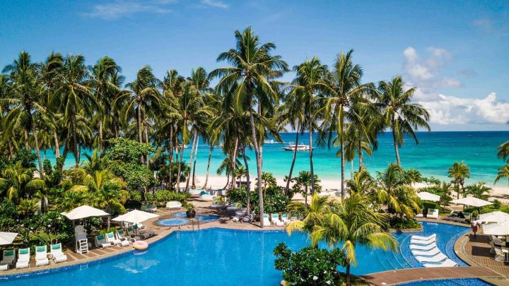

Welcome to Boracay
Boracay is a world-renowned tropical island located in the central Philippines, famous for its powdery white sand beaches and crystal-clear turquoise waters. Often considered one of the best beach destinations in the world, Boracay’s most famous spot is White Beach, a 4-kilometer stretch lined with palm trees, resorts, restaurants, and bars. The island offers a range of activities, from water sports like snorkeling, scuba diving, and kiteboarding to vibrant nightlife and relaxing beachside experiences. The stunning sunsets and relaxed island atmosphere make Boracay a favorite for travelers seeking both adventure and relaxation.
